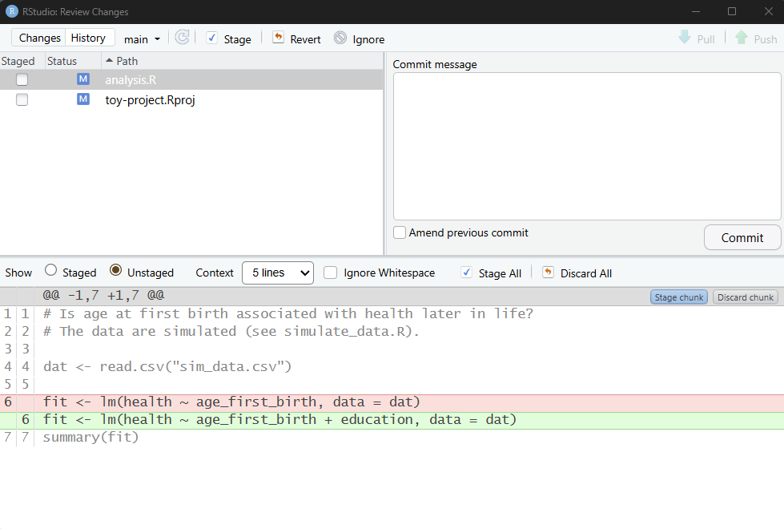

Git and GitHub for researchers
Version control and code sharing
CeFH Ung · 2nd Annual Young Researchers Workshop
18 November 2026
Why bother?
Questions you can’t answer today
- What did I change since I submitted?
- Which version of the code made Figure 2?
- What exactly did the AI just change?
- Which version does my coauthor have?
- Why doesn’t my code work anymore?
Sound familiar?
analysis.R
analysis_final.R
analysis_final_v2.R
analysis_final_v2_coauthor_comments.R
analysis_final_REALLY.R
analysis_final_REALLY_old.RWith git
analysis.ROne file. The history is kept in the background:
a3f9c12 Respond to reviewer 2 12 Nov
7b2e4d0 Add sensitivity analysis 3 Oct
e81c5f3 Submitted version 1 JunWhat git gives you
Track changes for a whole folder
History every saved version, with a note
GitHub backup, sync, and sharing
Core ideas
Words you need
| Word | Means |
|---|---|
| repository | the project folder |
| commit | saved snapshot + note |
| diff | what changed |
| stage | (optional) pick which changes go in the next commit |
| push | send commits to GitHub |
| pull | get commits from GitHub |
| clone | download a repo the first time |
Repository
A project folder that git keeps an eye on.
- Analysis: scripts and small files (
.R,.do,.csv) - Writing: papers and slides (
.tex,.md,.qmd)
Tip: tell git what to ignore with .gitignore
A text file called .gitignore in the project folder lists files git should never track,
for example data, large output and temporary files. One pattern per line:
*.rds *.dta temp_* data/ .Rhistory
Where the history lives
my-project/
├── .git/ ← the history
├── analysis.R
└── README.md- Created once, when you start using git in a folder
- Hidden. You never need to open it.
- Your files are the current version;
.githolds all the earlier ones
Commit
A saved snapshot, with a short note.
One commit per change that belongs together:
- “Add sensitivity analysis” ✓
- Not once a day, not every line
Diff
What changed between two versions.
# Is age at first birth associated with health?- fit <- lm(health ~ age_first_birth, data = dat)+ fit <- lm(health ~ age_first_birth + education, data = dat) summary(fit)
− removed + added
- Your edits since the last commit
- Or between commits: what came in when you pulled
Revert, and (optionally) stage
Go through the diff like track changes in Word.
Revert ✗ like Reject change: back to the last commit
Stage (optional) commit only some changes now, the rest later
Anything you don’t revert stays in your file.
Revert and stage: the buttons
| VS Code | RStudio | |
|---|---|---|
| File | ↶ or + next to the file | More → Revert, or tick Staged |
| Block | buttons next to the block in the diff | Discard chunk / Stage chunk |
| Lines | select, right-click → Revert / Stage Selected Ranges | select → Discard / Stage selection |
| Commit | nothing staged = commit all | tick Staged (usually all) |
The cycle
Check the diff when someone else made changes: an AI or a coauthor.
Your laptop and GitHub
← pull
pull →
or your other computer
- Git works offline. GitHub is the shared copy.
- Useful alone too: work laptop, home laptop, same project.
Two ways to start
Folder you already have initialize it, make a first commit, then publish to GitHub
New project create it on GitHub, then clone it
Where the buttons are
| VS Code | RStudio | |
|---|---|---|
| Initialize a folder | Source Control → Initialize Repository | Tools → Version Control → Project Setup → Git |
| First commit | Message "First version" → Commit | Tick all files under Staged → Commit |
| Then publish | Publish Branch | usethis::use_github() |
| New repo on GitHub | github.com: + → New repository, tick Add a README | |
| Then clone | Source Control → Clone Repository | New Project → Version Control → Git |
Demo 1: VS Code and RStudio
What I’ll show
- Turn a project folder into a repo
- Edit a script, see the diff, commit
- Let an AI edit, review it
- Look back in history
- Then the same in RStudio

Reviewing AI edits
- Commit before the AI starts
- Let it edit
- Read the diff
- Revert what you didn’t ask for, commit the rest
Tip: AI tools can read your project's history
In a git repo, tools like Claude Code can see every commit and every change. Ask "what changed since the submitted version?" or "when did this result change, and why?". They can also commit, push or revert for you. You still read the diff.History
Same buttons, different places
| VS Code | RStudio | |
|---|---|---|
| See changes | Source Control (left bar) | Git pane (top right) |
| Diff | click the file | Diff |
| Commit | type message, Commit | tick, Commit |
| Push and pull | Sync Changes | green / blue arrow |
| History | Graph / Timeline | clock icon |

GitHub
Why GitHub
- Share your code with the paper
- Work with coauthors
- Same project on several computers
- Backup off your laptop
Working with others
- Invite coauthors to the repo
- Pull before you start
- Push when you’re done
Both edited the same line?
Git asks you to choose.
Making code public
Anyone can clone and pull. Only you and invited coauthors can push.
A public repo shows the whole history
Old versions, old comments, files you deleted
Tip
Copy the final code into a new repo, and make that public
Demo 2: GitHub
What I’ll show
- Publish this workshop’s folder to GitHub, as a public repo
- Look at it on github.com: files, commits, a diff
- Edit on github.com, as a coauthor would
- Pull the change back to my laptop
Your turn
Exercise 1: set up git and clone this workshop
- Install git
- Restart RStudio / VS Code
- Tell git who you are
- Clone the workshop repo
No GitHub account needed yet. Pairs are fine.
1. Install git
| Work laptop (Windows) | Company Portal (Firmaportal) → search Git → Install |
| Private laptop (Windows) | https://git-scm.com/downloads/win, click Next through everything |
| Mac | Terminal app → type git --version → Install if asked |
2. Restart your editor
| RStudio | Restart. Check Tools → Global Options → Git/SVN: “Git executable” shows a path |
| VS Code | Restart. Git support is built in |
Stata: use VS Code for git.
3. Tell git who you are
Every commit records who made it: a name and an email. Git won’t commit until it knows. GitHub uses the email to link commits to your account.
Use the email you use (or will use) for GitHub. You only do this once per computer.
4. Clone the workshop repo
https://github.com/hafsunde/git-demo
VS Code
- File → Close Folder
- Source Control → Clone Repository
- Paste the link, Enter
- Choose a folder → Open
RStudio
- File → New Project
- Version Control → Git
- Paste the link
- Choose a folder → Create Project
A normal folder works best, e.g. Documents/GitHub. Then open participants/exercise-2-github.md.
Exercise 2: your own repo on GitHub
- GitHub account (if needed), then new repo on github.com, with a README
- Clone it to your laptop
- Edit the README, save
- Look at the diff, commit
- Push, refresh github.com
Steps: participants/exercise-2-github.md
Is it worth it?
What you get
Overview every change and every version, with a note on why
AI that you can check commit first, read the diff; AI can read the history too
Easy to share one link for coauthors, journals, or the public
Tips
- One commit per change; say why
- Pull when you start, push when you’re done
- Plain text works best (
.R,.do,.tex,.md) - LaTeX/Markdown: one sentence per line
- Prefer a normal folder over OneDrive/Dropbox
An idea for TSD
(in git)
→
real data
→
manuscript (in git)
- Keep a copy of the TSD scripts in a local repo
- Only aggregate results leave TSD
- Git also works on TSD, just not connected to GitHub or AI